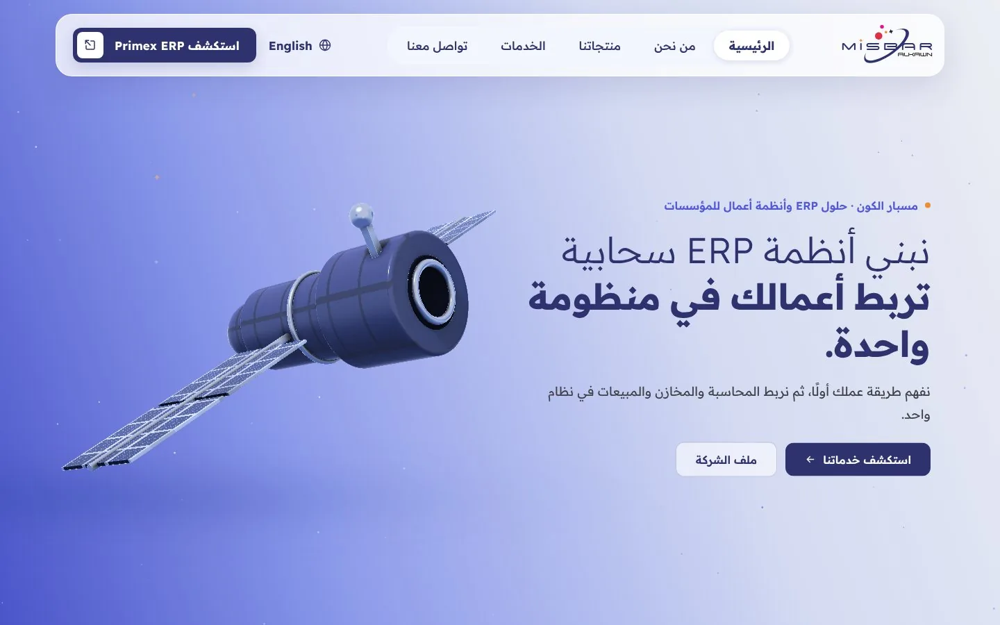
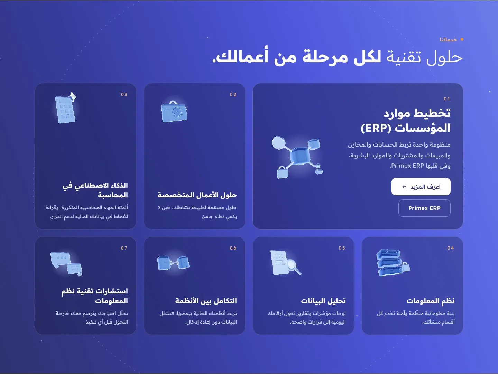
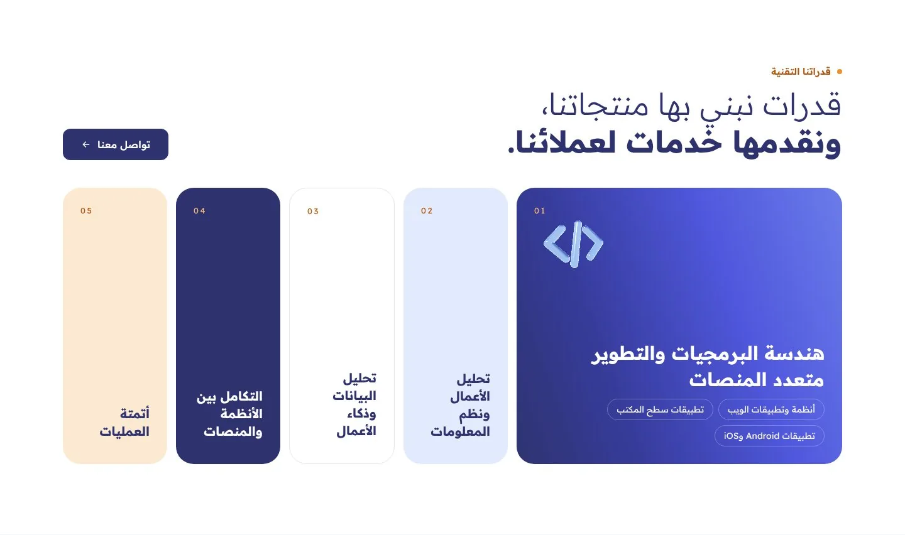
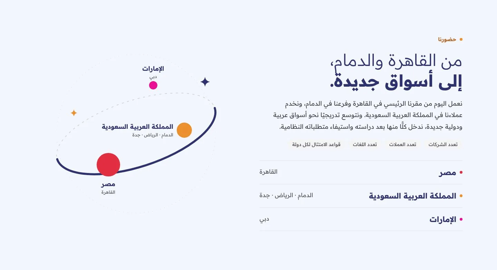
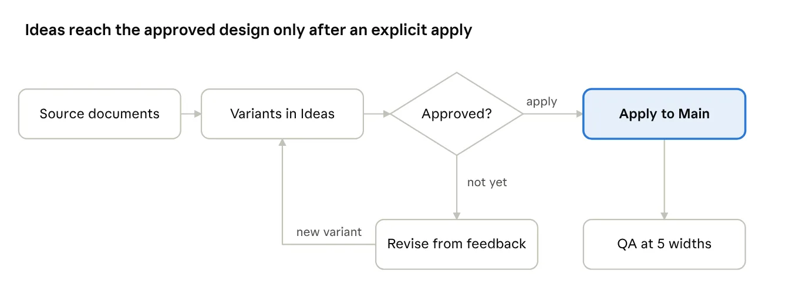
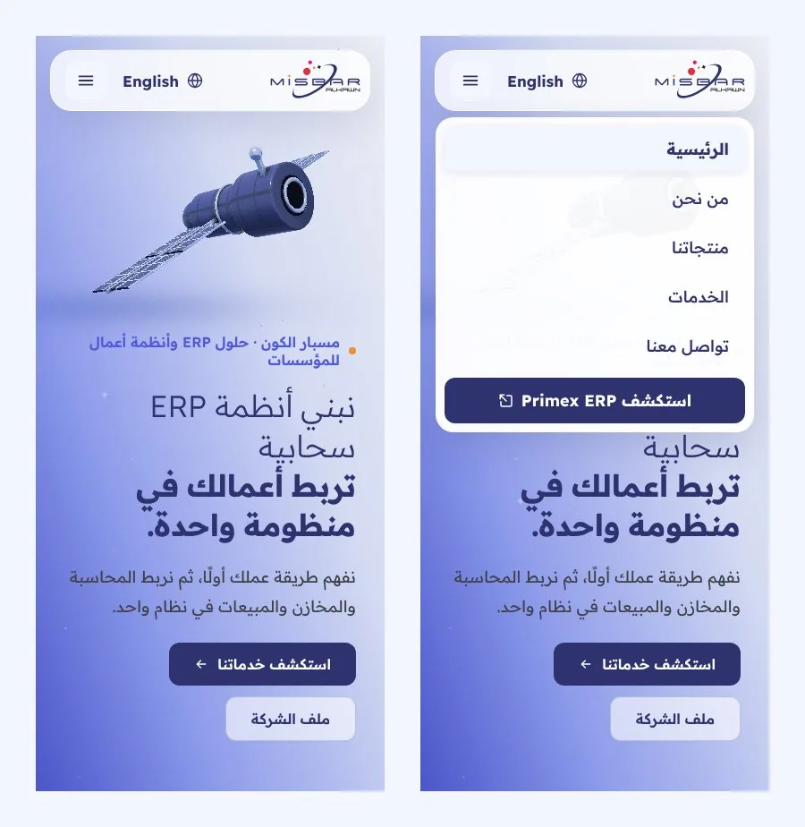
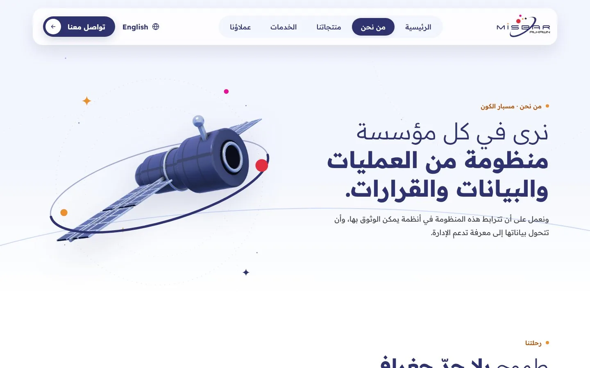
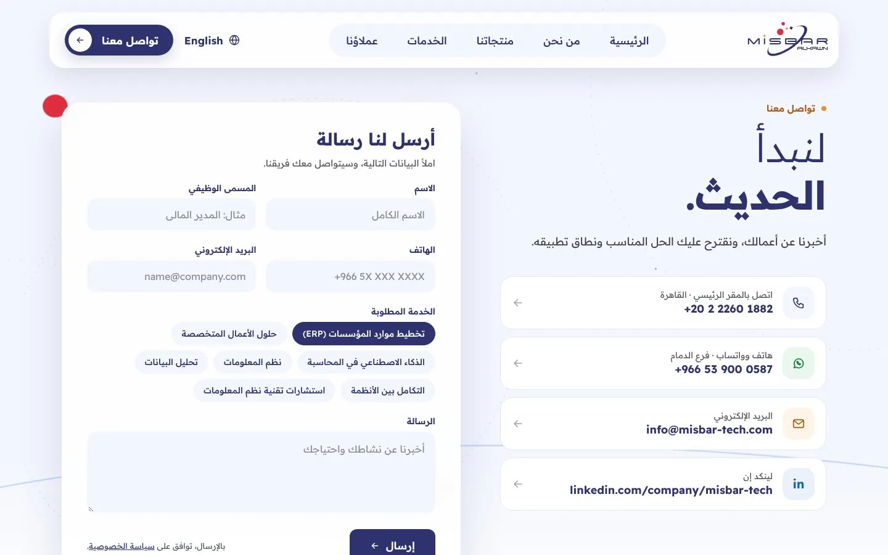
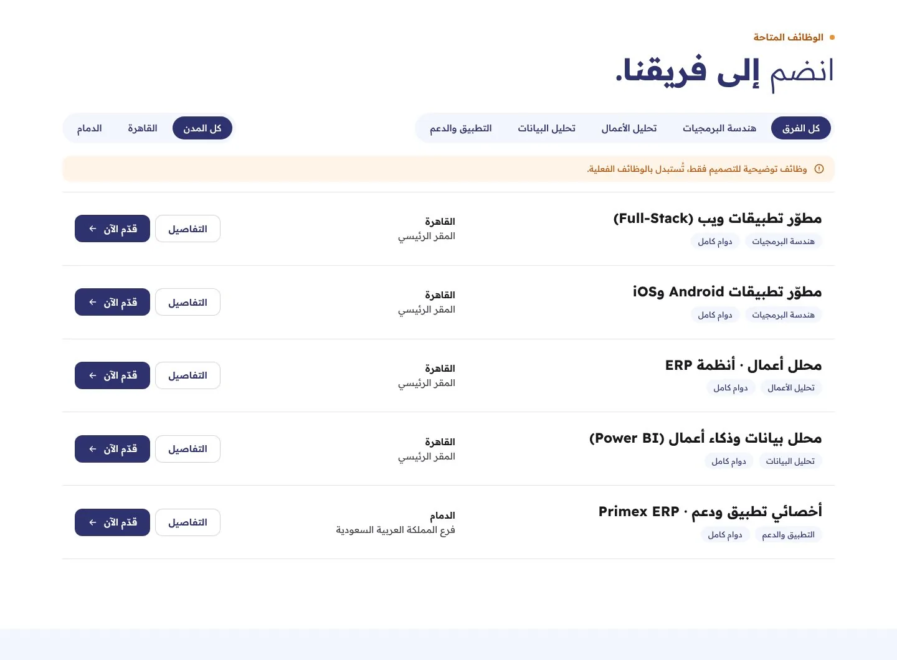

A software company site that reads like an enterprise partner
Misbar Alkawn builds information systems, and its flagship product is Primex ERP. I redesigned their Arabic-first corporate website and gave Primex a stage of its own. The homepage was approved and four inner pages were ready for review in five working days.
The short version
- A corporate site for Misbar Alkawn and a stage for its product, Primex ERP. Homepage approved in five working days.
- Two brands on one site: one navy CTA for Primex, everything else in Misbar's voice.
- Every line of copy comes from two approved documents. No invented numbers or clients.
- Ideas live on a separate canvas, two to four variants side by side. Nothing reaches the approved page without an explicit «apply».
- The test that fixed the visuals: related, not decorative.
- Arabic-first RTL, checked at six widths, with reduced-motion and no-WebGL fallbacks.
The homepage, section by section




Two brands, one site
Misbar Alkawn is a software and information-systems company with its head office in Cairo and a branch in Dammam. Its main product, Primex ERP, launched in 2024: eight connected modules, offline POS, Power BI, an AI assistant and Saudi e-invoicing.
The audience is retail, wholesale and multi-branch businesses in Saudi Arabia, plus Arab and international markets. They're buying a long-term software partner, so the site has to feel like one.
Enterprise, not a tech template
Early feedback was blunt: the first 3D shapes and icons didn't feel enterprise. From then on, every visual had to explain the text next to it.
Misbar is the company. Primex is a product brand credited as «Primex ERP من مسبار الكون». Neither should drown the other.
All copy comes from the company and Primex profiles. Anything else, like form microcopy, is flagged.
Layout, arrows, icons and reading order work natively right to left.
Explore freely, approve on purpose
I split the work into two spaces so exploring never put the approved design at risk. Each new direction got its own board on an Ideas canvas, usually two to four variants side by side. The homepage people review only changed when the lead said «apply».
- Draft from the source documents
- Two to four variants in Ideas
- Lead says «apply»
- QA at 5 widths, then publish
Feedback like "not enterprise" or "too template-like" sent a section back for new variants instead of a patch. QA ran before every publish: screenshots at 1920, 1440, 1366, 1024 and 390 px, plus form and filter checks in a headless browser.

Every section earned its final shape
4A · HeroKeep the probe, make it real
I tried a centred probe, four alternatives, a 2D version and three heroes with no 3D at all. The feedback was to keep the original probe but make it more realistic. It became a navy metallic model on the left, with the drag-to-rotate WebGL motion carried over.
4B · NavigationOnly one navy thing in the bar
A floating glass bar won over a bigger pill and a full-width bar. Then came "two primary colours in the top bar". So Contact moved into the links, the active link turned white, and the only navy element left is «استكشف Primex ERP», with an external-link icon.
4C · ServicesRelated, not decorative
Flat icons were out. Generic glass shapes got "concept good, but not related to the text". The final icons are still glass, but each one depicts its service, tuned for contrast on the dark blue.
Eight layouts to find one
List, spec rows, bento, fan, isometric, layers, problem-to-capability and expanding panels. Most were "too similar to services" or "too template-like". Five colour-coded panels that open on hover, focus or tap shipped, with the content untouched.
4E · Content disciplineIf it's not in the files, it's not on the page
A standalone "who it's for" section wasn't in the source content, so it folded under Primex as «لمن صُمم Primex ERP» with the eight sectors from the Primex profile. Office cards became a simple list of three countries and their cities, mirrored on the orbit illustration. The Primex name became its official logo.

One build each, no new styling
About, Contact, Careers and Job details reuse the homepage's navigation, tokens, buttons and footer, so each page took a single build.
5A · AboutThe company story, from the profile
A timeline from 2023 founding to the 2024 Primex launch and what's next, the meaning of the name as a calm "scan" visual, and the five values with the same glass icons as the homepage.
5B · ContactTurn interest into a conversation
Four direct channels beside a glass form where the seven services are selectable pills, with validation, a success state and both offices on a stylised map.
5C · CareersA list, filters and an apply form
Trimmed at the lead's request to just that. Team and city filters with an empty state; «قدّم الآن» pre-fills the role and team. Job details started as a side drawer and became a short page with a sticky apply card. Sample jobs are marked as illustrative until HR sends real ones.



One set of tokens for every page
| Token | Value | Use |
|---|---|---|
| Navy | #2E3370 | Text, buttons, active states |
| Primex blue | #283F9C | Primex ERP moments only |
| Orange | #EC902F | Dots, numbering, highlights (text uses #B45309) |
| Mist | #F3F6FD | Alternating section background |
| Type | IBM Plex Sans Arabic | Light + bold pairs in every headline |
Accessibility ran with every change, not at the end. Every page was checked at six widths from 1920 to 390 px. Reduced motion turns the floats off, and the 3D hero falls back to a still image without WebGL. Orange was rejected for the nav button at about 2.5:1 against white. Forms have labels and inline errors, the active link has aria-current, and links that open Primex in a new tab say so.
Approved in five days
The homepage was approved and is live on the preview site. About, Contact, Careers and Job details are designed on the same system and ready for review. More than 50 exploration boards stay on the Ideas canvas as a record of every decision.
Still open: carry the new navigation to the inner pages, swap the Primex placeholders for real product shots, get real job listings from HR, and build the English version.
Three things I'd keep
- Show variants side by side. Two to four options at once got faster, clearer decisions than revising one design.
- "Related, not decorative." That one test is what finally made the icons work.
- Tie copy to the source. Every line traced back to the approved documents, so checking the site against them meant no rework.